affiches pour dénoncer les violences faites aux femmes
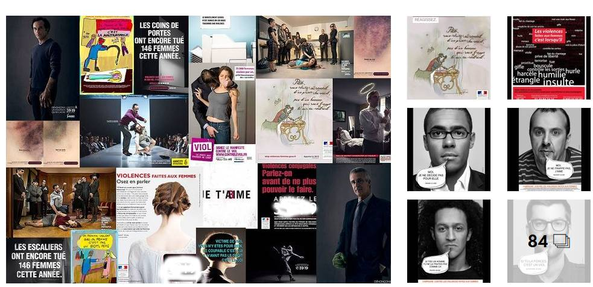
Comment briser le tabou des violences faites aux femmes ?
Au Togo, associations et institutions tentent d’alerter
l’opinion publique, en choisissant des messages plus ou moins chocs.
Des hommes représentés avec des mains de monstres, des hématomes qui
ne sont plus dissimulés ou des dessins d’enfants permettent d’attirer
l’attention sur les violences conjugales, le viol, la traite humaine ou
le harcèlement sexuel au travail… Découvrez en images ces affiches diffusées
de 2008 à aujourd’hui.
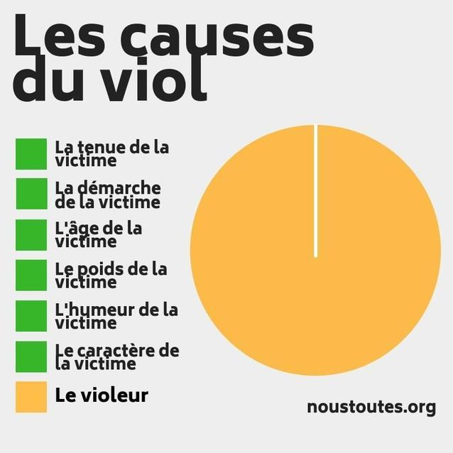
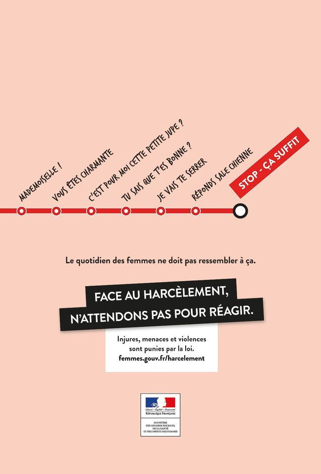
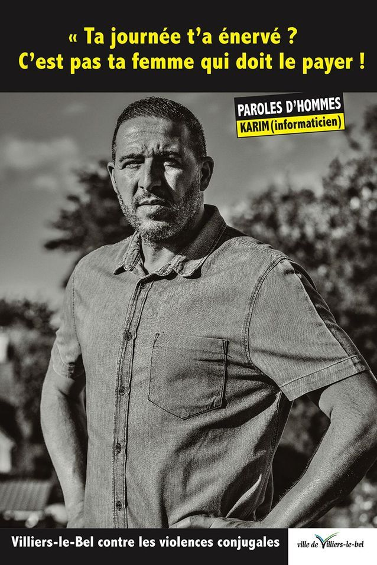
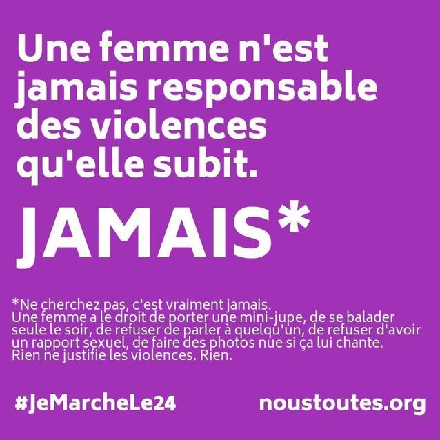
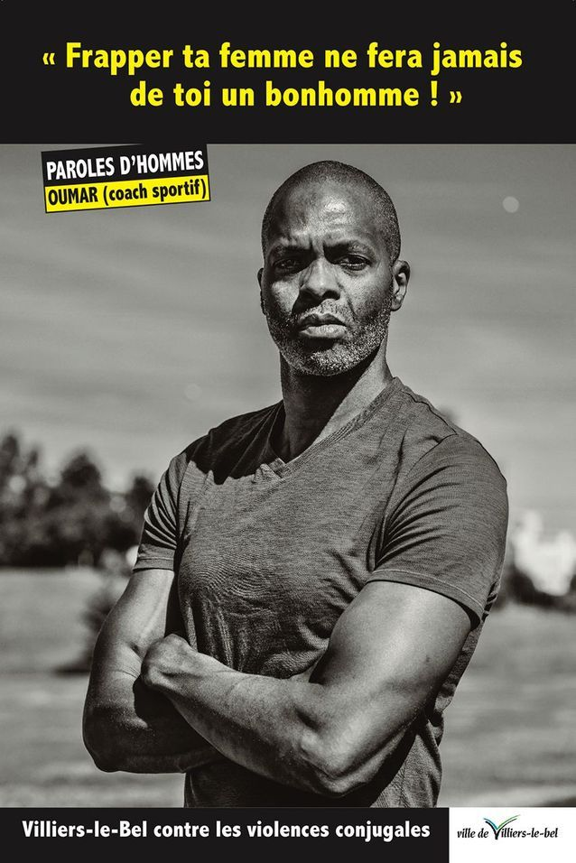
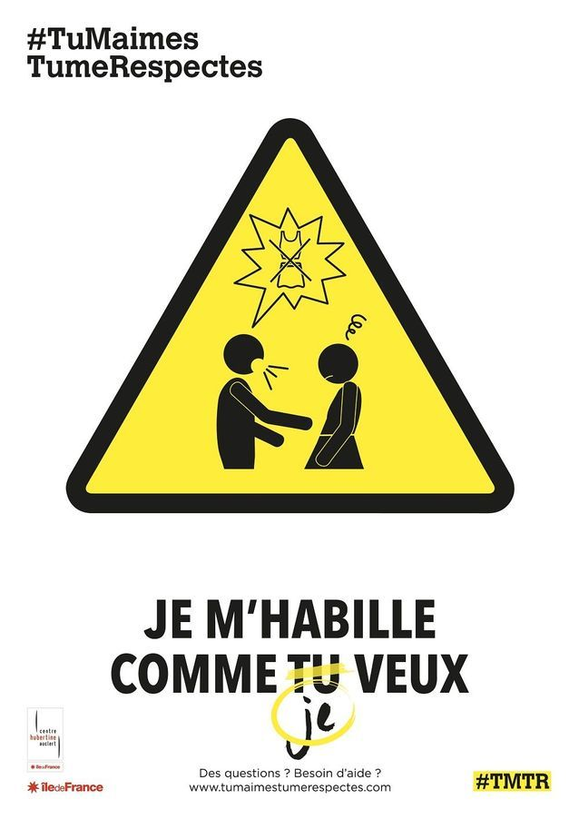
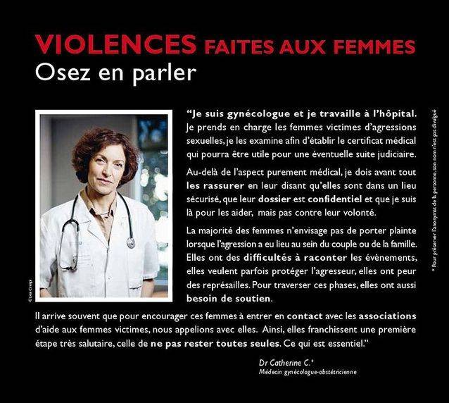
Une gynécologue s'exprime à son tour.
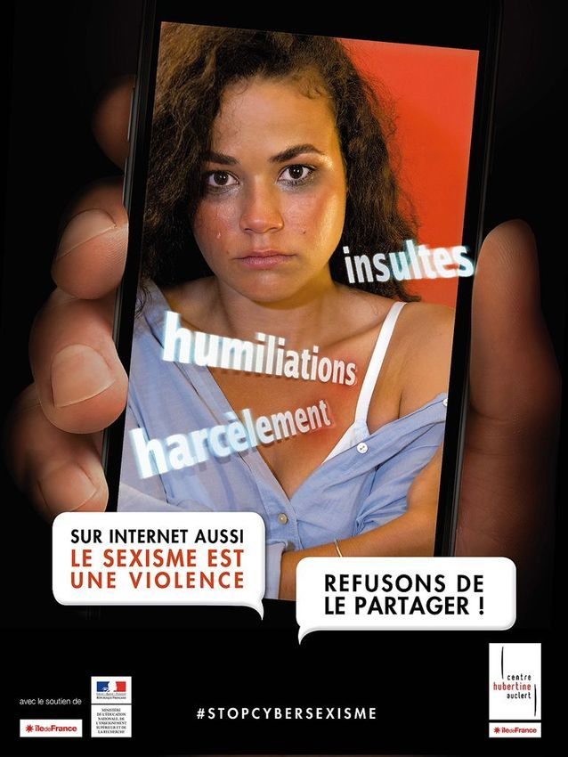
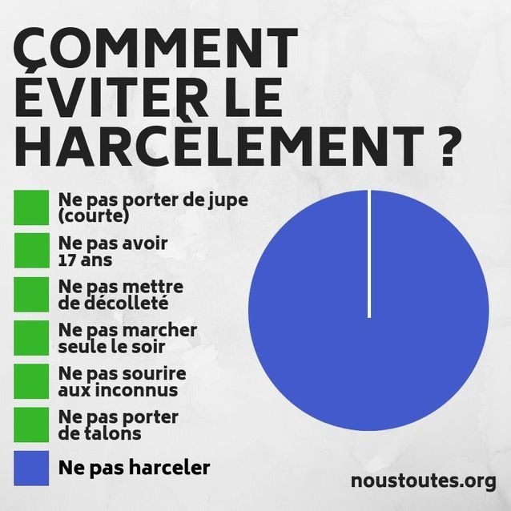
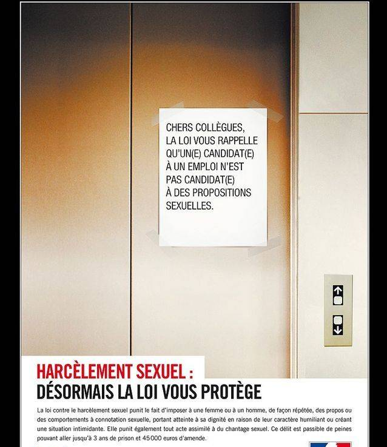
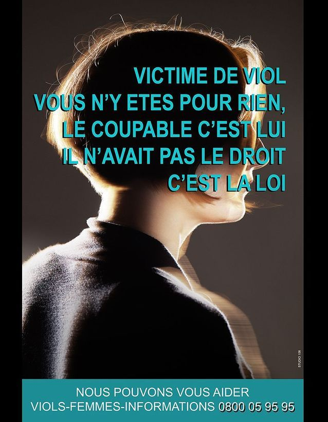
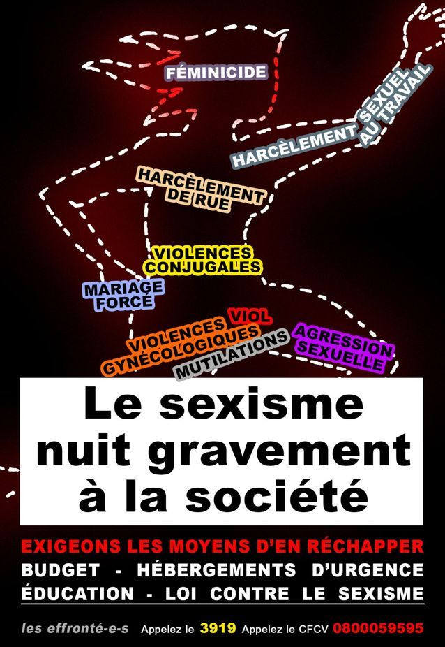
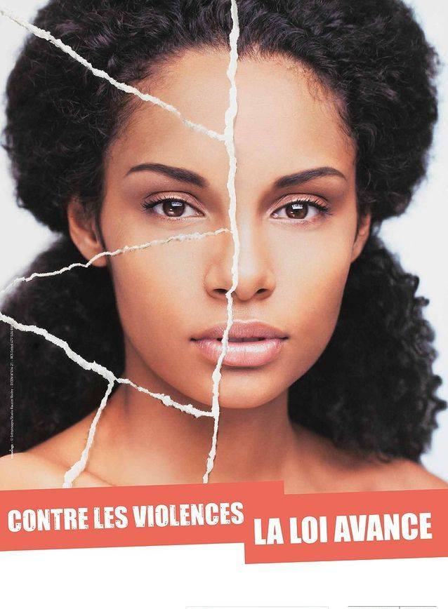
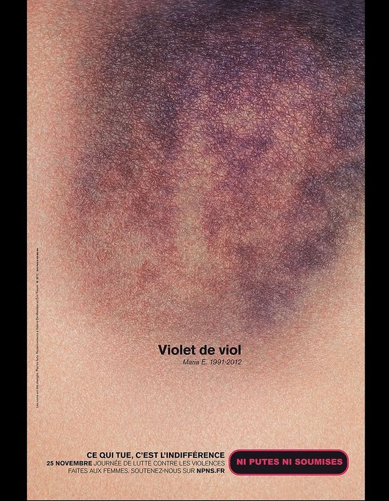
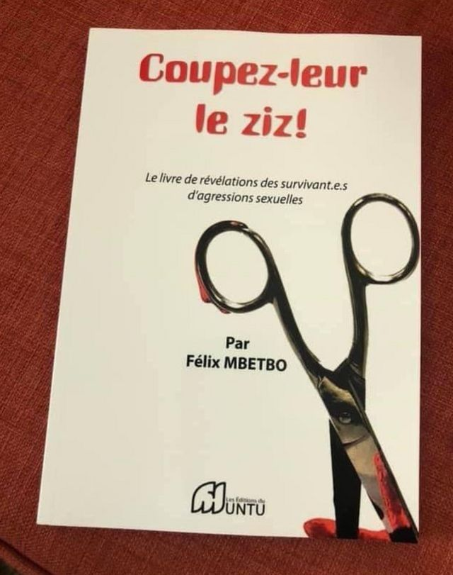
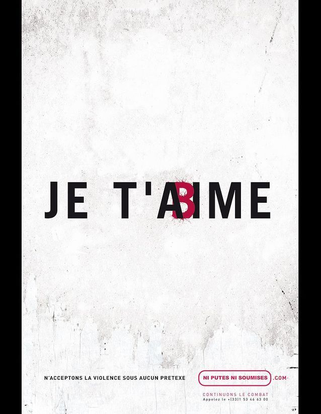
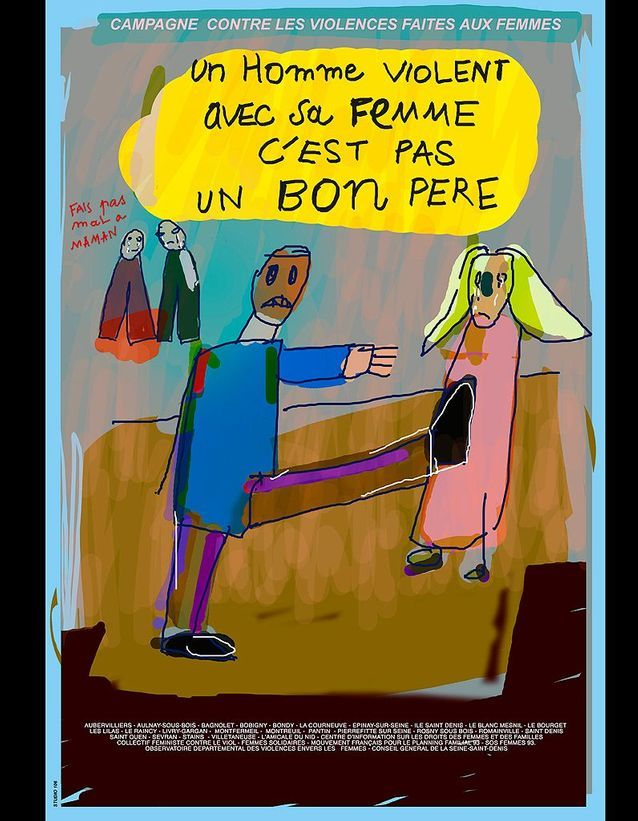
Dessins d'enfant pour lutter contre la violence conjugale